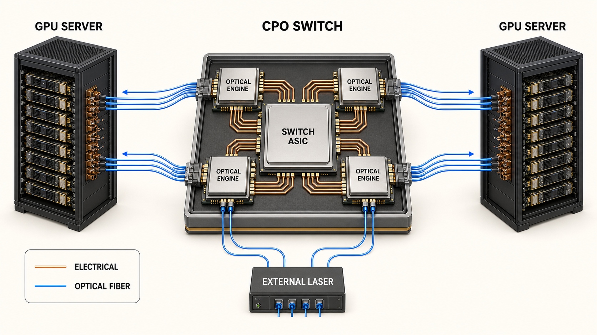
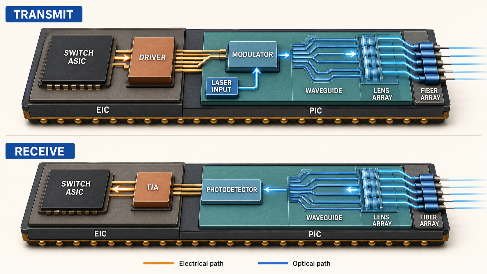
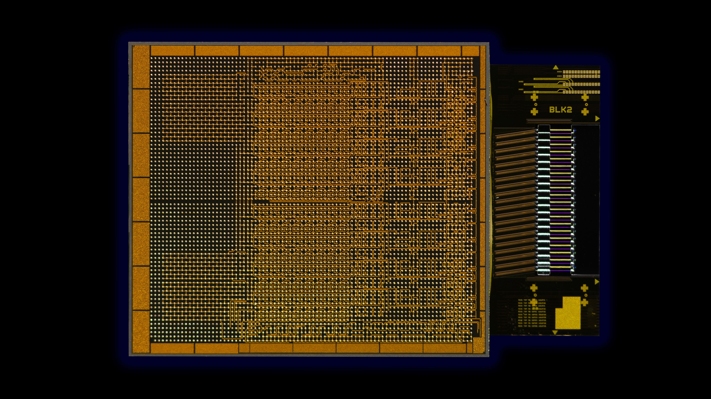

スイッチASIC
多数の通信から送り先を決める。
多数の通信から送り先を決める。
光エンジン
電気信号と光信号を相互変換する。
電気信号と光信号を相互変換する。
レーザー
データを運ぶ光を光エンジンへ供給する。
データを運ぶ光を光エンジンへ供給する。
CPOが接続する範囲
CPOパッケージの内部では、スイッチASICと光ファイバーを光エンジンがつなぐ。光ファイバーは装置の外へ延び、GPUサーバーや別のネットワークスイッチに接続する。

光エンジンを構成する部品
光エンジンは、電気信号と光信号を相互変換する小型モジュールである。送信側はレーザー光へデータを書き込み、受信側は到着した光を電気信号へ戻す。

- レーザー
- データを運ぶ連続光を発生させる。交換しやすい外部配置と、光エンジンへの内蔵がある。
- 変調器
- スイッチASICから受けた0と1の電気信号を、光の変化として書き込む。
- 光導波路
- 光エンジン内部で光を目的の変調器、受光素子、出力端へ運ぶ。
- 受光素子
- 光ファイバーから届いた光を電気信号へ変換する。
- ドライバーとTIA
- 変調器を駆動し、受光素子が出す弱い電気信号を増幅する。
- レンズとFAU
- 微小な光路と複数の光ファイバーを正確に位置合わせする。FAUはFiber Array Unitの略である。
実物では何が同じ場所に載るのか
下の写真は、IntelがCPUと同じパッケージで動作させた光I/Oチップレットである。中央の大きなチップが電気回路、右側の細長い部分が光回路とファイバー接続部に当たる。スイッチ用CPOも、演算または通信を担う大型ASICの近くへ光変換部を置くという点で共通する。
